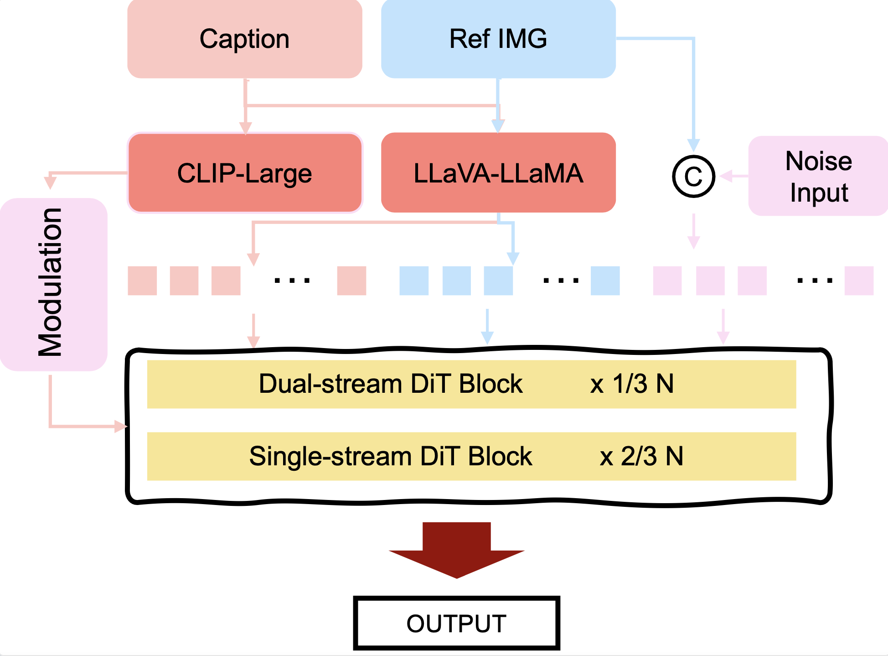

A group of friends laughing and talking animatedly around a campfire, with sparks flying and flames crackling.
We present Magic 1-For-1, an efficient video generation model with optimized memory consumption and inference latency. The key idea is simple: factorize the text-to-video generation task into two separate easier tasks for diffusion step distillation, namely text-to-image generation and image-to-video generation. We verify that with the same optimization algorithm, the image-to-video task is indeed easier to converge over the text-to-video task.
A group of friends laughing and talking animatedly around a campfire, with sparks flying and flames crackling.
A young woman with a determined expression kneels before another person, her posture suggesting supplication.
A small dog standing in a field of tall grass, looking around curiously with its ears perked up.
A group of friends laughing and talking animatedly around a campfire, with sparks flying and flames crackling.
A young woman with a determined expression kneels before another person, her posture suggesting supplication.
A small dog standing in a field of tall grass, looking around curiously with its ears perked up.
A group of friends laughing and talking animatedly around a campfire, with sparks flying and flames crackling.
A young woman with a determined expression kneels before another person, her posture suggesting supplication.
A small dog standing in a field of tall grass, looking around curiously with its ears perked up.
A group of friends laughing and talking animatedly around a campfire, with sparks flying and flames crackling.
A young woman with a determined expression kneels before another person, her posture suggesting supplication.
A small dog standing in a field of tall grass, looking around curiously with its ears perked up.

Magic 1-For-1 is an efficient video generation model designed to create short video clips quickly. It simplifies the complex task of generating videos from text by breaking it down into two easier steps: first, generating an image from the text, and then generating a video from that image. This approach leverages the relative simplicity of text-to-image generation. The model incorporates several optimizations, including using both text and visual information to guide the image generation, and streamlining the video generation process to reduce the number of steps required.
The model further enhances efficiency through techniques like adversarial step distillation, which accelerates the generation process, and parameter sparsification, which reduces memory usage. These methods allow the model to generate short video clips in just a few seconds. By using a sliding window approach during inference, the model can also create longer videos, up to a minute in length, while maintaining good visual quality and motion.
Magic 1-For-1 uses DMD2, a state-of-the-art step distillation algorithm, to train a "generator" model that can produce high-quality videos in just a few steps. This generator model is trained in conjunction with two other models: one that approximates the real data distribution and another that approximates the distribution of the generated data. By aligning these distributions, the generator model learns to produce realistic videos efficiently. We also incorporate CFG distillation to further reduce the computational overhead during inference.
@article{park2021nerfies,
author = {Park, Keunhong and Sinha, Utkarsh and Barron, Jonathan T. and Bouaziz, Sofien and Goldman, Dan B and Seitz, Steven M. and Martin-Brualla, Ricardo},
title = {Nerfies: Deformable Neural Radiance Fields},
journal = {ICCV},
year = {2021},
}